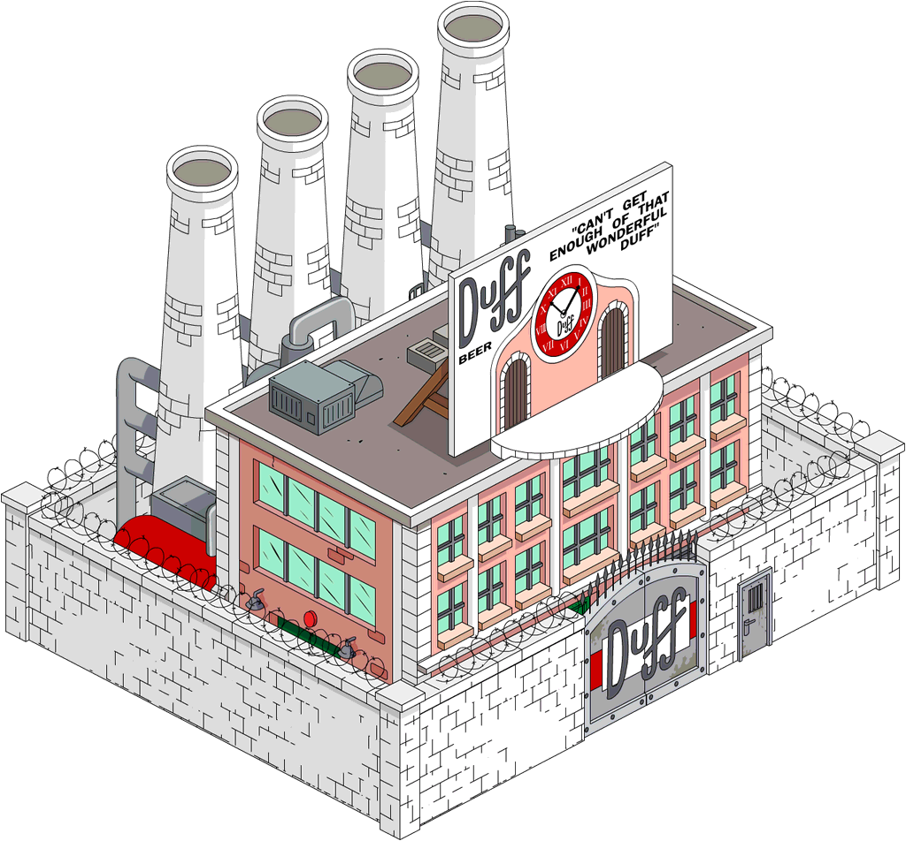

Videó méret: 11.1 mb | Leírás A gyár épülete (kívülről muatva) beúszik a képbe. Vágás után a szóvivő belép egy nagy Duff dobozos sör elé és köszöntés után elindítja a túrát. A következő pillanatokban különböző Duff reklámplakátokat, aztán pedig egy reklámfilmet (állítása szerint a kedvencüket) mutat meg. "Csak a Duff tudja megtölteni a pocakodat igazi Sör jósággal" - mondja a figura a reklámban, aztán belekortyol az italba és rakátaként elrepül. Egy pillanatig újra kívülről látjuk a gyárat, majd pedig megismerhetjük, hogyan készül a Duff, a Duff Lite és a Duff Dry. "Mit tartogat a jövő a Duff számára? Mondjuk azt, hogy van még egy pár dolog a tarsolyunkban.." - próbál felvágni a szóvivő. Homer:"Mégis micsodák?" Szóvivő:"*habozva*Ne menjünk bele." H:"Nem mondhatod el?" Sz:"Na jó, nincs is semmiféle tervünk. Boldog vagy?" H:"Nem". A következő jelenetben a Szóvivő bemutatja a "legfontosabb embert" a munkafolyamatban: a palackok átvizsgálásáért felelős munkatársat, aki idő közben ki is veszi a "patkányos" és "egeres" söröket. Barney oda állít hozzá gratulálni, de amíg beszélgetnek több hibás sört - többek között a befőttesüveget, amelyben Hitler feje van - sem sikerül észrevennie az ellenőrnek.
Can’t Get Enough of That Wonderful Duff
A Duff Breweries 1989-ben kezdte meg tevékenységét Springfield városában. A mára a világ harmadik legnagyobb sörgyártójává nőtt, amely a hazai sörpiac egyik meghatározó szereplője.
Manapság
A termék minősége az elmúlt 10-15 évben folyamatosan nőtt, minőségét a nemzetközi gyártó tapasztalat, a szigorú technológiai és minőségi előírások garantálják. Az eltelt évtizedek során azonban a márka mindvégig hű maradt a gyökereihez: továbbra is évtizedes hagyományokkal rendelkező springfieldi sör, melyet nemzetközileg is többször elismertek.
Társadalmi felelősségvállalás
Sörgyártóként a Duff Breweries feladatának tartja a felelősségteljes alkoholfogyasztás, a társasági élet és a gasztronómia részét képező sörfogyasztás kultúrájának népszerűsítését a vállalaton belül, és azon kívül egyaránt. A vállalat számos színvonalas zenei, sport, művészeti rendezvényt, társadalmi eseményt támogat, lehetőséget biztosítva az emberek számára, hogy találkozzanak és jól érezzék magukat.
